Is the sequence bounded?
Oh. My. Gauss. What a punch drunk lovely squiggly wiggly sequence that is.
First, let me answer the question, so you don’t have to suffer through the rest of my musings: no, the sequence isn’t bounded, and it’s not hard to prove. The fun lies in the way it dances around as n grows.
So we’re looking at partial sums of the sequence \tan(1),\tan(2),\tan(3),\ldots and so on. The arguments 1,2,3 are, of course, interpreted as radians. The first thing you probably want to do is look at the sequence itself – how about the first 10 terms?
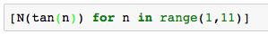
1.557, -2.185, -0.1425, 1.158, -3.380, -0.2910, 0.8715, -6.800, -0.4523, 0.6483
(All the code snippets are Sage, but sometimes I reformatted the output for legibility. The environment is Jupyter).
Looks pretty harmless, right? Random-looking small numbers, some positive, some negative. If we look at the partial sums, meaning \tan(1),\tan(1)+\tan(2),\tan(1)+\tan(2)+\tan(3) and so on, we expect something that meanders randomly up and down. And indeed, here’s what we see:
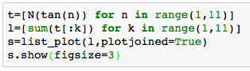
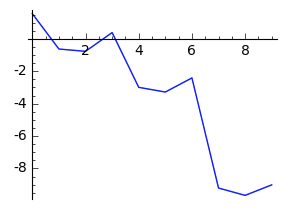
I mean, sure, it looks a bit down-ish, but nothing too dramatic. Perhaps it’s bounded? If the positive terms and negative terms keep showing up randomly, they might cancel each other out. It might stay bounded.
But we stopped at \tan(10)=0.6483\ldots, maybe we should do a bit more? What is \tan(11) anyway?
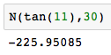
LOL wait what? \tan(11) is negative two hundred something? Why…? How…?
Before we answer that, let’s agree that this dramatic entrant is going to push our partial sums way low. And if \tan(12), \tan(13) etc. are well behaved we’re going to stay low. And indeed:
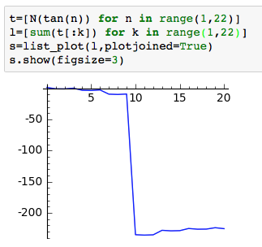
Notice the scale on the left: instead of wandering around small negative numbers, we’re now stuck deep in the abyss. What if we keep going?
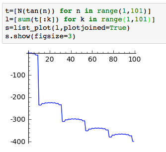
That’s a… that’s an odd staircase if I’ve ever seen one on a simple function. The steps down seems to be mitigating themselves though… shall we keep going? Here are the first 300 partial sums:
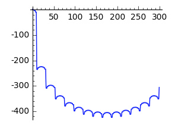
Whoa.
But wait, you ain’t seen nothing yet. Here are the first 400:
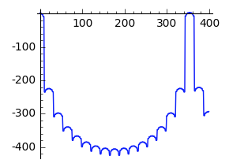
Well, damn. Somewhere around 350, something was pushing the sums back up to around zero, and then jumped back down. What the…? And how come it’s so nicely symmetric?
Clearly, we must up our game. Let’s do the first 1,000?
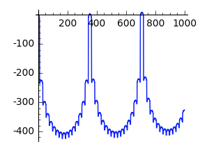
Ok that looks really bounded. Right? It’s bizarre, but quite regular, and seems to be confined to somewhere between the negative 400’s and small positive values. Does it stay that way forever? I mean the peaks seem to slightly rise, but that’s probably nothing… right?
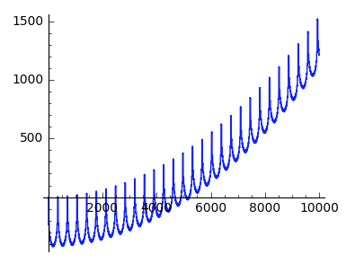
I guess not.
Those “periodic” bounces, three of which occurred through 1,000, were just the first few harmonics in what seems to be a relentless trend upwards. Remember when we were in the negative range? We seem to have long left it, and now we’re flying high above the ground.
Cautiously we proceed… through 50,000:
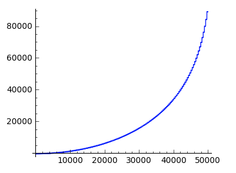
“Bounded” no longer seems like the right adjective, does it? More like “exponentially growing”? Remember though, there’s a fine detail in this graph: if you zoom in, you’ll see those bouncy-mouncy troughs from the previous graph. Uncanny.
But why stop at 50,000? We are young, we are free, we have computers. 100,000 here we come:
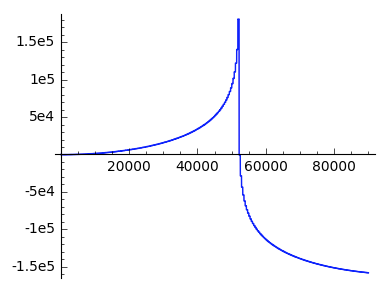
W H A A A A A A A A A A T . . .
Well apparently, something came along around the 50,000 mark and just smashed that exponential progress we’ve made in one fell swoop, reversing the entire playing field. Again.
You think this is the last time? I guess by now we quit having any expectations of predictability, or predictions of expectability. Or something. Here, I went further down some more.
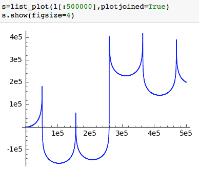
We are now pretty much in NSFW territory.
Ok. It’s time to put some thought into this madness.
Remember than \tan(11)=-225.95\ldots? What’s that “11” thing?
You may recall that \pi \approx \frac{22}{7} is a particularly good approximation of \pi. That means that \frac{11}{7} is particularly close to \frac{\pi}{2}, which in turn means that 11 is very close to 7\frac{\pi}{2}, an odd multiple of \frac{\pi}{2}.
What happens at whole, odd multiples of \frac{\pi}{2}? Well, \sin(x) is pretty large (close to 1), while \cos(x) is tiny. This makes their ratio \tan(x) very large in absolute value – either positive or negative, depending on whether you’re slightly above or slightly below a whole, odd multiple of \frac{\pi}{2}.
This explains why \tan(11) is so enormous. The integer 11 just happens to lie exceedingly close to 7\frac{\pi}{2}. The next well-known approximation of \pi is \frac{355}{113}, but 355 is odd so we get an even multiple of \frac{\pi}{2}, which makes \tan(355) very small, almost zero. However, 11 steps before that we are hitting an odd multiple from below, which is why \tan(344)is so large, just large enough to cancel the effect of \tan(11) (since 355 is almost 113\pi, \tan(355-11) is almost the negative of \tan(11).) This is how the bouncy-mouncy trough is formed.
The sum total of each of those troughs is positive, so as we add them up and keep drifting away we increase and get that exponentially rising curve. But then comes a new sharp approximation of \pi with an even denominator, which is 104348, so at 104348/2 = 52174 we got our downwards bit of drama, that massive drop down followed by a mirror of previous events: \tan(52174) is around negative 181 thousand.
The reason those crazy good approximations keep popping up is the fact that \pi, like any good irrational number, has a sequence of convergents arising from its continued fraction.
We’ve gone through similar arguments here and here. In fact, as we saw, the mere irrationality of \pi shows that the sequence n \bmod \pi is dense, so it gets arbitrarily close to \pi/2 which implies that \tan(n) isn’t bounded, and therefore the partial sums x_n cannot be bounded either. If they were all between some A and some B, \tan(n) couldn’t exceed B-A, but eventually it does.
This argument leaves open the possibility that x_n is bounded below but not above, or vice versa. I’m quite sure it’s not, but this may require more careful analysis. At any rate, the partial sums certainly aren’t bounded.
What a punch drunk lovely series that is!